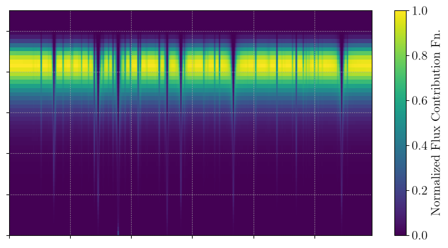
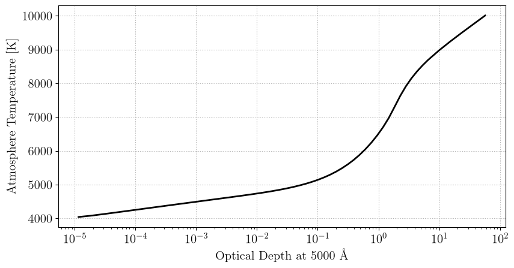
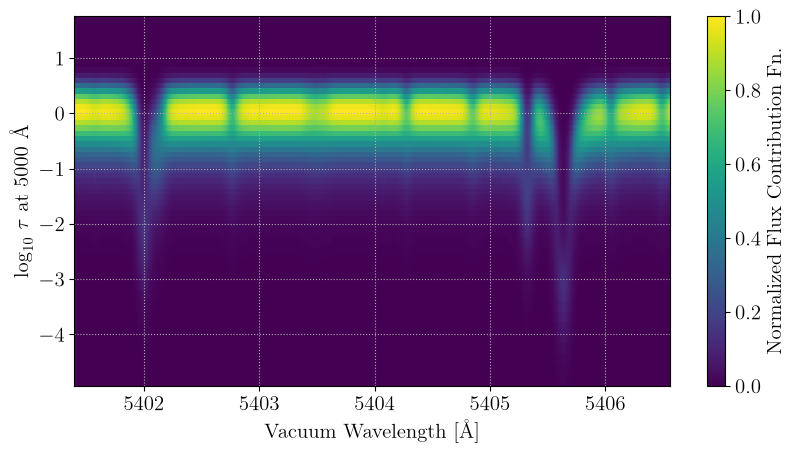
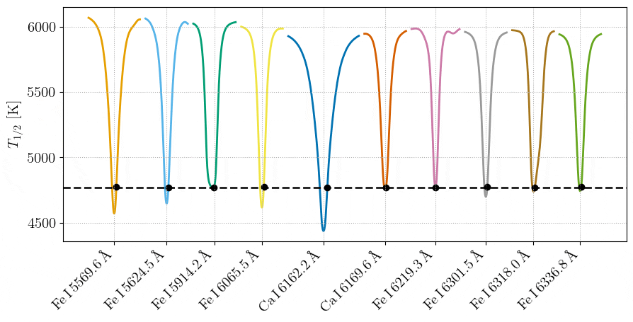
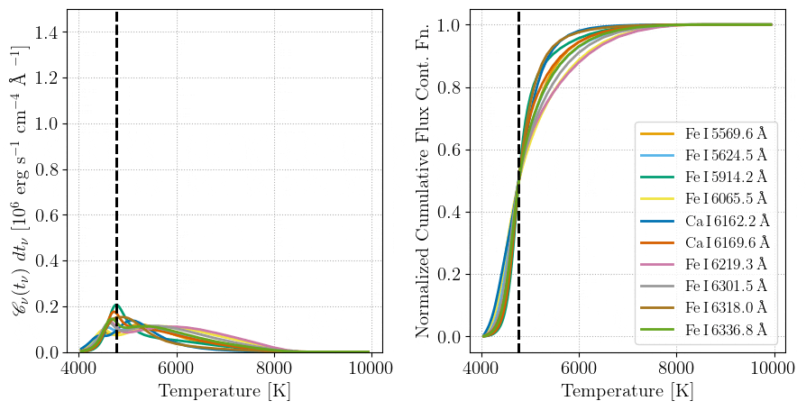

Manipulating Contribution Functions
Formation temperatures are a summary statistic of the contribution functions, which FormTempResult also carries in its cont_func field. To plot them:
using Korg
using PythonPlot; plt = PythonPlot.pyplot
using FormationTemps; FT = FormationTemps
plt.style.use(joinpath(FT.moddir, "fig.mplstyle"))
# get the linelist
linelist = Korg.read_linelist(joinpath(FT.datdir, "Sun_VALD.lin"))[16000:16100]
# set stellar parameters
Teff = 5777.0
logg = 4.44
Fe_H = 0.0
vsini = 2100.0
ζ_RT = 3400.0 # radial-tangential macroturbulent broadening
ξ = 850.0 # microturbulent broadening
# create StellarProps composite type to hold everything
star_props = StellarProps(Teff=Teff, logg=logg, Fe_H=Fe_H,
vsini=vsini, v_macro=ζ_RT, v_micro=ξ)
# get the flux + formation temperature spectra
form_temp_result = FT.calc_formation_temp(star_props, linelist; Δλ=0.005)
# parse the result
wavs = form_temp_result.wavs
flux = form_temp_result.flux
temp = form_temp_result.form_temps
cont_func = form_temp_result.cont_func
# cont_func holds per-interval integrals, so its magnitude follows the layer spacing of the
# model atmosphere. Convert to a density per dex of reference optical depth before plotting
# against depth; see the note below on integrals vs densities.
cont_dens = cfunc_per_dex(form_temp_result)
# plot the output
fig, ax1 = plt.subplots(figsize=(9.6,4.8))
img = ax1.pcolormesh(cont_dens ./ maximum(cont_dens), cmap="viridis")
ax1.set_xticklabels([])
ax1.set_yticklabels([])
fname = joinpath(FT.moddir, "docs", "src", "static", "cont_func_simple_example.png")
cbar = fig.colorbar(img, ax=ax1)
cbar.set_label("{\\rm Normalized Flux Contribution Fn.}")
fig.savefig(fname, bbox_inches="tight")
plt.show()
plt.clf(); plt.close()

Integrals or densities?
Element [k, j] of cont_func is the contribution of the atmosphere interval between layers k and k+1 to the flux at wavelength j. Summing a column gives the emergent flux, in the units of Korg.synthesize and on the same scale for every method; result.flux is that sum divided by the continuum sum:
sum(result.cont_func, dims=1) # the emergent fluxEach element already includes the width of its interval, so:
- For sums over depth, use
cont_funcas it is. Weighted means, cumulative distributions and the 50% crossing behindform_temps_from_cfuncare all of this kind. - For comparisons across depth, such as plotting against depth or taking a ratio of two intervals, convert to a density with
cfunc_per_dex, which givesdF/dlog₁₀τ_ref. MARCS layers are 0.1 dex apart in log τref between −3 and +1 and 0.2 dex outside, so raw ```contfuncjumps by a factor of two at those depths for no physical reason. The plots on this page use the density, andceilingratio``converts internally, which is why it needsτref`.
To label the depth axis, take the atmosphere structure from the result:
# parse the atmosphere
atm = form_temp_result.atmosphere
zs = get_zs(atm)
Ts = get_Ts(atm)
τs = get_τs(atm)
# plot temperature structure vs optical depth (if available) or height
fig, ax1 = plt.subplots(figsize=(9.6,4.8))
if isempty(τs)
ax1.plot(zs ./ 1e5, Ts, c="k") # fall back to height in km
ax1.set_xlabel("{\\rm Height [km]}")
else
ax1.plot(τs, Ts, c="k")
ax1.set_xscale("log")
ax1.set_xlabel("{\\rm Optical Depth at 5000 \\AA}")
end
ax1.set_ylabel("{\\rm Atmosphere Temperature [K]}")
fname = joinpath(FT.moddir, "docs", "src", "static", "atmosphere.png")
fig.savefig(fname, bbox_inches="tight")
plt.show()
plt.clf(); plt.close()

Zoomed in on a few lines, with the depth axis labeled:
# choose some lines to zoom into
lines_to_focus = linelist[5:25]
rest_wls = [1e8 * l.wl for l in lines_to_focus]
buffer = 0.5
idx1 = findfirst(x -> x .>= minimum(rest_wls) - buffer, wavs)
idx2 = findfirst(x -> x .>= maximum(rest_wls) + buffer, wavs)
# pixel centers for pcolormesh: one per wavelength bin, and the log-τ midpoint of each
# layer interval (cont_dens is a density per dex, so its rows are centered in log τ)
xcenters = view(wavs, idx1:idx2)
ycenters = elav(log10.(τs))
cfuncp = view(cont_dens, :, idx1:idx2)
# plot the contribution function
fig, ax1 = plt.subplots(figsize=(9.6,4.8))
img = ax1.pcolormesh(xcenters, ycenters, cfuncp ./ maximum(cfuncp), cmap="viridis")
ax1.set_xlabel("{\\rm Vacuum Wavelength [\\AA]}")
ax1.set_ylabel("\$\\log_{10}\\,\\tau\$ {\\rm at 5000 \\AA}")
cbar = fig.colorbar(img, ax=ax1)
cbar.set_label("{\\rm Normalized Flux Contribution Fn.}")
fname = joinpath(FT.moddir, "docs", "src", "static", "cont_func_example.png")
fig.savefig(fname, bbox_inches="tight")
plt.show()
plt.clf(); plt.close()

Formation temperatures can lie to you!
Pixels with the same formation temperature need not have similar contribution functions. In each frame below, the black pixels in the line cores share a formation temperature to within a couple of Kelvin, yet their contribution functions differ markedly. They converge toward the continuum, but most of the radial-velocity information sits in the steep line flanks, where they do not. Sections 4.2 and 4.3 of the paper presenting FormationTemps.jl discuss this further; read them before relying on formation temperatures.


Lines the model cannot get right
boundary_mask only catches lines whose contribution function has not decayed by the top of the model atmosphere. It cannot catch a line whose physics is wrong: Korg assumes LTE and MARCS has no chromosphere, so a chromospheric line, a line far from LTE, or one with poor atomic data gives a well-behaved contribution function and a meaningless formation temperature.
The repo carries a curated list of such lines in data/bad_lines.csv, applied by scripts/bad_lines_mask.jl. Each row gives an air wavelength (lambda_air), a species and a reason: chromo, nlte or linedata.
using FormationTemps; FT = FormationTemps
include(joinpath(FT.moddir, "scripts", "bad_lines_mask.jl"))
entries = read_bad_lines(joinpath(FT.datdir, "bad_lines.csv");
vacuum=true, max_extent_default=MAX_EXTENT_DEFAULT)
entries = verify_species_present(entries, line_wavs, line_species;
n_sigma_halo=N_SIGMA_HALO, v_broad=v_broad)
lm = build_line_mask(result.wavs, result.flux, entries;
n_sigma_halo=N_SIGMA_HALO, depth_thresh=DEPTH_THRESH,
min_core_depth=MIN_CORE_DEPTH, v_broad=v_broad,
core_frac=CORE_FRAC)line_wavs and line_species come from the linelist the synthesis used, and v_broad = sqrt(vsini^2 + ζ^2 + ξ^2).
The script loads CSV, DataFrames and Korg. Outside the FormationTemps project, add them to your environment first:
using Pkg; Pkg.add(["CSV", "DataFrames", "Korg"])The line mask uses bits 0x02, 0x04 and 0x08 for the three reasons and leaves 0x01 for the boundary flag, so the two combine into one array:
bnd = ifelse.(boundary_mask(result), MASK_BOUNDARY, 0x00)
mask = lm.mask .| bnd
good = mask .== 0x00Each entry masks the line's own core: build_line_mask starts at the flux minimum near the listed wavelength and widens until the line rises back above max(DEPTH_THRESH, CORE_FRAC · core_depth). report_line_mask prints the region each entry settled on.
verify_species_present drops, with a warning, any entry whose species has no nearby line in the linelist. Without it, an entry for a missing transition would mask whatever unrelated line happened to be deepest nearby.
This is a script, not package API: the list is data you can inspect and amend.